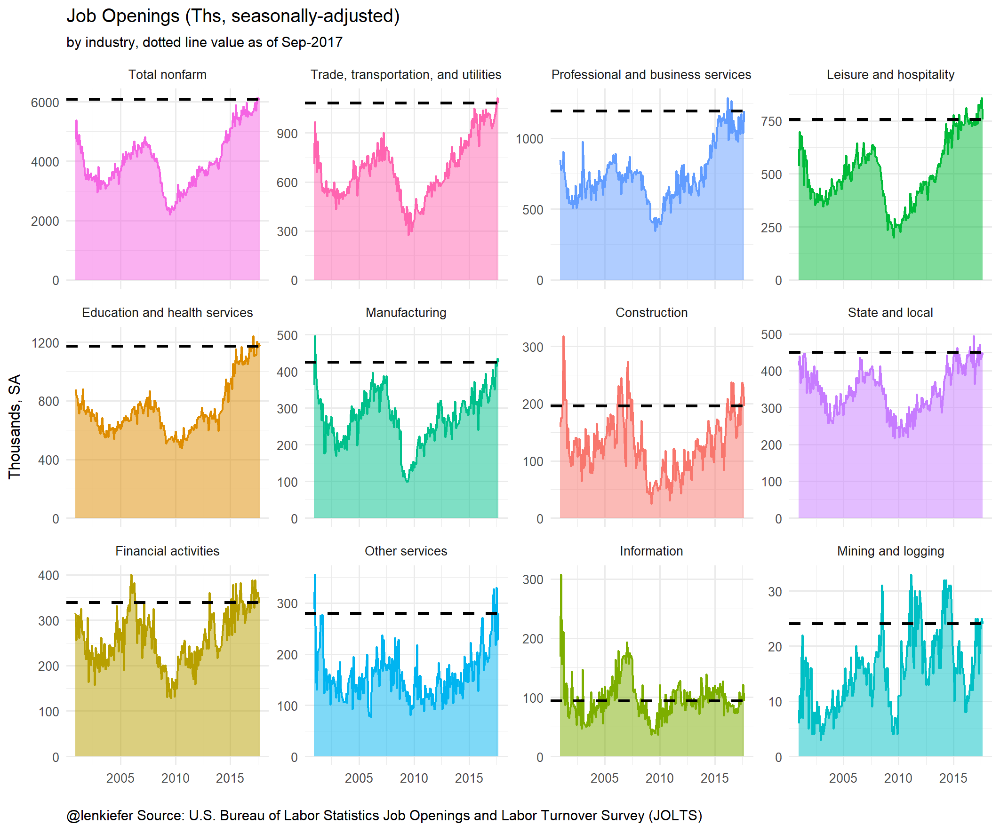
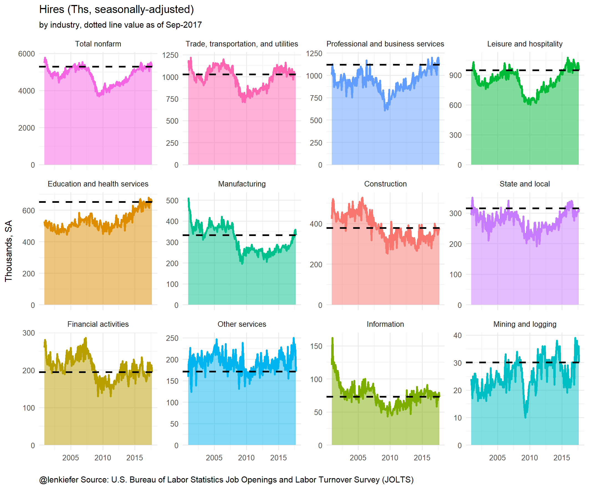
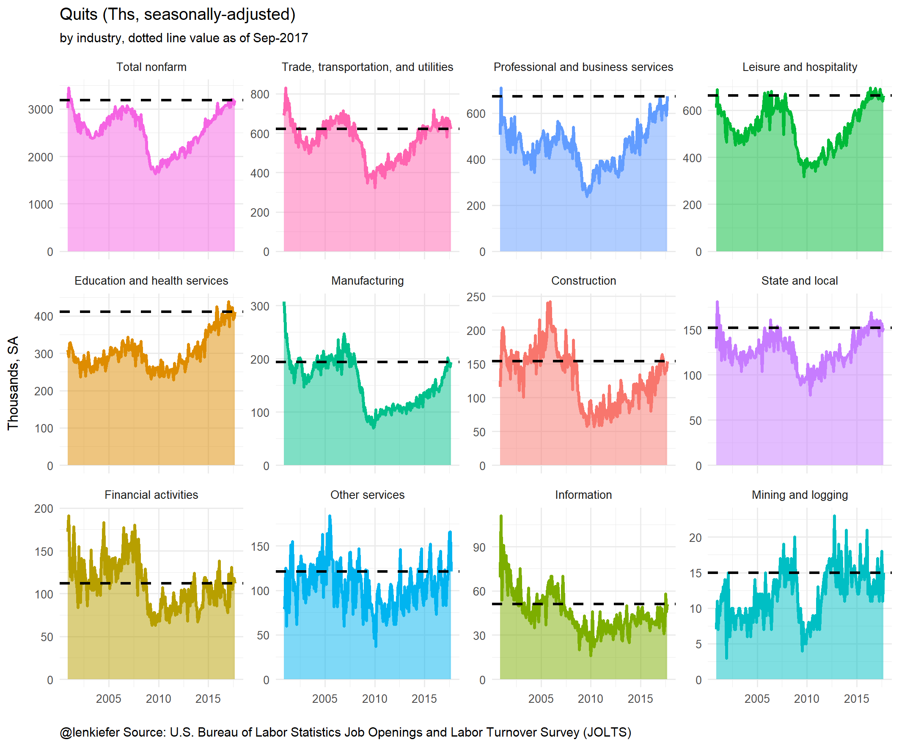

LET’S TAKE A LOOK AT RECENT LABOR MARKET TRENDS IN THE UNITED STATES. Below we’ll plot labor market trends using the U.S. Bureau of Labor Statistics Job Openings and Labor Turnover Survey (JOLTS).
Last year we looked at how to get the data and plot it using R. Look to that post for more details, though I’ll include all the code we need below at the bottom.
A trilogy of plots
First, let’s look at some static plots.
Job openings
The first plot shows job openings by industry in the U.S.

We can see that job openings have increased. How about hiring?
Hires

Hiring has increased, but not as much as job openings.
Quits
Quits are a useful measure of confidence in the labor market. If workers feel confident about the labor market they are more likely to quit than if they feel apprehensive about their prospects. Increased quits are a sign of tightening in the labor market. Indeed we see that quits have trended higher.

Animated verisions


R code
The code below creates the plots above.
Get data
First, we need to get the data:
#####################################################################################
## Load libraries ##
#####################################################################################
library(data.table)
library(tidyverse)
#####################################################################################
## Get data from BLS with data.table::fread ##
#####################################################################################
jolts.dt<-fread("http://download.bls.gov/pub/time.series/jt/jt.data.1.AllItems")
jolts.series<-fread("http://download.bls.gov/pub/time.series/jt/jt.series")
jolts.ind<-fread("http://download.bls.gov/pub/time.series/jt/jt.industry",
col.names=c("industry_code","industry_text", "display_level", "selectable","sort_sequence","blank"))
jolts.element<-fread("http://download.bls.gov/pub/time.series/jt/jt.dataelement",
col.names=c("dataelement_code","dataelement_text","display_level","selectable","sort_sequence","blank" ))
#ratelevel: R=rate, L=level
#dataelement_code dataelement_text display_level selectable sort_sequence
#HI Hires 0 T 2
#JO Job openings 0 T 1
#LD Layoffs and discharges 1 T 5
#OS Other separations 1 T 6
#QU Quits 1 T 4
#TS Total separations 0 T 3
#region_code region_text display_level selectable sort_sequence
#00 Total US 0 T 1
#MW Midwest (Only available for Total Nonfarm) 1 T 4
#NE Northeast (Only available for Total Nonfarm) 1 T 2
#SO South (Only available for Total Nonfarm) 1 T 3
#WE West (Only available for Total Nonfarm) 1 T 5
#industries
ind.list<-unique(jolts.series$industry_code)
ind.list1<-unique(jolts.ind[display_level==1,]$industry_code)
ind.list2<-unique(jolts.ind[display_level==2,]$industry_code)
ind.list3<-unique(jolts.ind[display_level==3,]$industry_code)
reg.list<-unique(jolts.series$region_code)
elem.list<-unique(jolts.element$dataelement_code)
jolts.series[seasonal=="S" & dataelement_code=="HI" &
ratelevel_code=="R" & region_code=="00", ]
my.series<-jolts.series[seasonal=="S" &
ratelevel_code=="L" & region_code=="00", ]
#####################################################################################
## data manipulation ##
#####################################################################################
my.out<-jolts.dt[ series_id %in% my.series$series_id,]
my.out<-merge(my.out,jolts.series[,list(series_id,industry_code,dataelement_code)],by="series_id")
my.out<-merge(my.out,jolts.ind[,list(industry_code,industry_text)],by="industry_code")
my.out[,month:=as.numeric(substr(period,2,3))]
my.out[,date:= as.Date(ISOdate(year,month,1))]
bdata<-my.out[year==2000 & month==12,]
bdata<-dplyr::rename(bdata, value00=value)
bdata<-bdata[, c('value00','series_id'), with = FALSE]
my.out<-merge(my.out,bdata,by="series_id")
my.out[,val00:=100*value/value00]
bdata<-my.out[year==2007 & month==12,]
bdata<-dplyr::rename(bdata, value07=value)
bdata<-bdata[, c('value07','series_id'), with = FALSE]
my.out<-merge(my.out,bdata,by="series_id")
my.out[,val07:=100*value/value07]
my.out<-my.out[order(date,-value00),]
my.out[,industry_textf:=factor(industry_text,levels=unique(my.out$industry_text))]
levels(my.out$industry_textf)
d.list<-unique(my.out$date)
d.list2<-unique(my.out[date>="2007-12-01",]$date)
N<-length(d.list2)Plotting functions
The functions below create our plots
# myplotf() plots job openings
# myplotf2() plots hires
# myplotf3() plots quits
myplotf<-function(i=N){
g<-
ggplot(data=my.out[(industry_code==00000 |(industry_code !=910000 &
industry_code %in% ind.list2) )&
date<=d.list2[i] &
dataelement_code=="JO",],
aes(x=date,y=value,color=industry_text))+
facet_wrap(~industry_textf,scales="free_y")+
geom_line(data=my.out[(industry_code==00000 |(industry_code !=910000 &
industry_code %in% ind.list2) )&
dataelement_code=="JO",],color=NA)+
geom_ribbon(alpha=0.5,aes(ymin=0,ymax=value,fill=industry_text),color=NA)+
geom_line(size=0.5)+
theme_minimal(base_size=8)+theme(legend.position="none")+
geom_hline(data=my.out[(industry_code==00000 |(industry_code !=910000 & industry_code %in% ind.list2) )& date==d.list2[i] & dataelement_code=="JO",],
aes(yintercept=value),linetype=2,color="black",size=0.75)+
scale_x_date(limits=c(min(d.list),max(d.list2)))+
theme(plot.caption=element_text(hjust=0))+
labs(x="", y="Thousands, SA",
subtitle=paste("by industry, dotted line value as of",
as.character(d.list2[i],format="%b-%Y")),
title="Job Openings (Ths, seasonally-adjusted)",
caption="@lenkiefer Source: U.S. Bureau of Labor Statistics Job Openings and Labor Turnover Survey (JOLTS)")
}
myplotf2<-function(i=N){
g<-
ggplot(data=my.out[(industry_code==00000 |(industry_code !=910000 &
industry_code %in% ind.list2) )&
date<=d.list2[i] & dataelement_code=="HI",],
aes(x=date,y=value,color=industry_text))+
facet_wrap(~industry_textf,scales="free_y")+
geom_line(data=my.out[(industry_code==00000 |(industry_code !=910000 &
industry_code %in% ind.list2) )&
dataelement_code=="HI",],color=NA)+
geom_ribbon(alpha=0.5,aes(ymin=0,ymax=value,fill=industry_text),color=NA)+
geom_line(size=0.85)+
theme_minimal(base_size=8)+theme(legend.position="none")+
geom_hline(data=my.out[(industry_code==00000 |(industry_code !=910000 & industry_code %in% ind.list2) )&
date==d.list2[i] & dataelement_code=="HI",],
aes(yintercept=value),linetype=2,color="black",size=0.75)+
scale_x_date(limits=c(min(d.list),max(d.list2)))+
theme(plot.caption=element_text(hjust=0))+
#scale_y_log10()+
labs(x="", y="Thousands, SA",
subtitle=paste("by industry, dotted line value as of",
as.character(d.list2[i],format="%b-%Y")),
title="Hires (Ths, seasonally-adjusted)",
caption="@lenkiefer Source: U.S. Bureau of Labor Statistics Job Openings and Labor Turnover Survey (JOLTS)")
}
for (i in seq(1,N,3)) {
file_path = paste0(mydir, "/plot-",5000+i ,".png")
g<-myplotf2(i)
ggsave(file_path, g, width =12, height = 10 , units = "cm",scale=1.5)
print(paste(i,"out of",N))
}
myplotf3<-function(i=N){
ggplot(data=my.out[(industry_code==00000 |(industry_code !=910000 &
industry_code %in% ind.list2) )&
date<=d.list2[i] & dataelement_code=="QU",],
aes(x=date,y=value,color=industry_text))+
facet_wrap(~industry_textf,scales="free_y")+
geom_line(data=my.out[(industry_code==00000 |(industry_code !=910000 & industry_code %in% ind.list2) )&
dataelement_code=="QU",],color=NA)+
#scale_y_continuous(limits=c(25,150),breaks=seq(25,175,25))+
#scale_y_continuous(limits=c(0,250),breaks=seq(0,350,50))+
geom_ribbon(alpha=0.5,aes(ymin=0,ymax=value,fill=industry_text),color=NA)+
geom_line(size=0.85)+
theme_minimal(base_size=8)+theme(legend.position="none")+
geom_hline(data=my.out[(industry_code==00000 |(industry_code !=910000 & industry_code %in% ind.list2) )&
date==d.list2[i] & dataelement_code=="QU",],
aes(yintercept=value),linetype=2,color="black",size=0.75)+
scale_x_date(limits=c(min(d.list),max(d.list2)))+
theme(plot.caption=element_text(hjust=0))+
#scale_y_log10()+
labs(x="", y="Thousands, SA",
subtitle=paste("by industry, dotted line value as of",
as.character(d.list2[i],format="%b-%Y")),
title="Quits (Ths, seasonally-adjusted)",
caption="@lenkiefer Source: U.S. Bureau of Labor Statistics Job Openings and Labor Turnover Survey (JOLTS)")
}Call plots
If we just want a static plot, we can just call the functions with \(i=length(dlist)=N\).
If we want an animation, set the variable mydir to a place where you want to store the image files. Then run:
mydir<- "YOURDIRECTORY" #where you want the images
for (i in seq(1,N,3)) {
file_path = paste0(mydir, "/plot-",5000+i ,".png")
g<-myplotf(i)
ggsave(file_path, g, width =12, height = 10 , units = "cm",scale=1.5)
print(paste(i,"out of",N))
}
g<-myplotf(N)
for (i in (N+1):(N+5)){
file_path = paste0(mydir, "/plot-",5000+i ,".png")
ggsave(file_path, g, width =12, height = 10 , units = "cm",scale=1.5)
print(paste(i,"out of",N))
}Simply substitute myplotf2() or myplotf3() for myplotf() if you want hires (quits) instead of job openings.
Then navigate to mydir and call magick convert -delay 10 loop -0 *.png awesomegif.gif from the command line to create the gif. Alternatively, you could try the magick package.